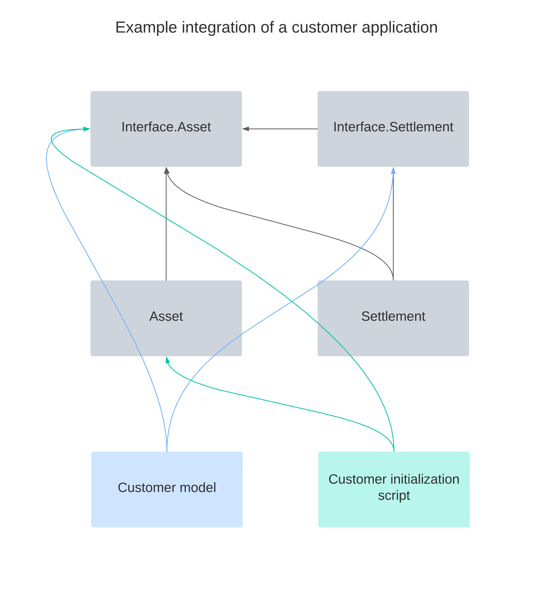

Architecture¶
This page outlines the architecture of the library and the relationships between the different packages.
Daml Finance consists of a set of .dar packages that can be divided
into two layers:
- an interface layer representing its public, stable API
- an implementation layer providing a set of standard template implementations
Each package in the implementation layer only depends on packages of the interface layer.
Interface layer¶
The interface layer provides common type definitions and a set of Daml interface definitions. These interfaces define the API by which implementation packages (containing concrete template definitions) can interact with each other.
This layer includes three Daml packages, each grouping related business functionality. These packages can in principle be used independently from each other.
Daml.Finance.Interface.Assetdefines interfaces for instruments, accounts, and holdings, as well as holding properties such as fungibility, transferability, or locking.Daml.Finance.Interface.Settlementdefines interfaces for settlement instructions and batched settlements.Daml.Finance.Interface.Lifecycledefines interfaces used for instrument lifecycling.
In addition to the above, the Daml.Finance.Interface.Common package
defines types, interface, and utilities used by other interface
packages.
Implementation layer¶
The implementation layer defines concrete template definitions implementing the interfaces defined in the interface layer. These are the objects that are ultimately stored on the ledger.
For instance, Daml.Finance.Asset defines a concrete implementation
of a transferable, fungible holding. This template implements
interfaces defined in Daml.Finance.Interface.Asset.
The implementation layer consists of the following packages
Daml.Finance.Assetdefines default implementations for holdings, accounts and instruments.Daml.Finance.Settlementdefines templates for settlement instructions and arbitrary batched settlements.Daml.Finance.Lifecycledefines an implementation of lifecycle effects, as well as a rule template to facilitate their settlement.Daml.Finance.RefDataincludes templates used to store reference data on the ledger. This data is typically used within the lifeycling functionality (e.g. holiday calendars and rate fixings).
Other packages¶
The Daml.Finance.Common package provides a set of pure utility
functions. These are useful for e.g., date manipulation.
Extension packages¶
The library provides a set of extension packages modelling instruments across a variety of asset classes, and the corresponding lifecycle events.
For instance, the Daml.Finance.Instrument.Bond package defines commonly-used
fixed income instruments, such as a floating-rate bond.
These models do not have the ambition to fully cover a customer application’s requirements, hence they are not considered part of the core library, but rather an extension thereof. We are however confident that these implementations will support customer applications and shorten their time-to-market significantly.
How to use the library¶
Users are expected to build their application such that it only depends on packages of the interface layer.
This ensures that patches and bug-fixes can be rolled out through new implementation packages, and existing contracts stemming from those packages can be upgraded without affecting the customer application.
There are cases, however, where a customer will have to depend on specific implementation packages. This dependency should be limited to the minimum and typically only be required in scripts that are executed as part of an application initialization. In this context, a tight coupling to an implementation is not problematic, as these are considered one-time actions.
The image below depicts the dependency graph of an example customer application using Daml Finance. The Getting Started examples showcase this dependency pattern.
Extension Points¶
Each of the provided interfaces allows a user to extend the library with custom functionality. The important extension points are:
- Holding interface hierarchy: can be implemented to support specific requirements around fungibility (e.g. fixed divisibility), transferability (e.g. transfer restrictions), or just to hold additional information required on a holding contract.
- Instrument interface: can be implemented to support specific financial instruments and data models (e.g. a CDM-based instrument)
- Account interface: can be implemented to support different account types (e.g. gold bars located at shelfs in vaults)
- Settlement interfaces: can be implemented to support new settlement modes (e.g. involving off-ledger legs, or HTLC-type mechanisms)
- Lifecycle interfaces: can be implemented to support new lifecycle events, or observation types